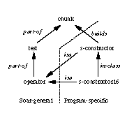

Computer Science
Carnegie Mellon University
412-268-5728
altmann@cs.cmu.edu
Psychology
Carnegie Mellon University
412-268-3785
jhl@cs.cmu.edu
Computer Science, Psychology, and HCI Institute
Carnegie Mellon University
412-268-7182
bej@cs.cmu.edu
FIGURE 1. Scrolling sequences, by sequence length.
FIGURE 2. Sample navigation: Scrolling from memory.
In E1, the user is looking at a chunk, or production. She expresses a lack of knowledge about its tests, or conditions (t18). She examines them, then notes an operator test (t21). Later, in E2, she recalls something about an operator test (t400). This prompts her to scroll back to the screen from E1.
The two episodes are 6 minutes apart, in which time the user issued 2 other scrolling sequences and 28 commands to the Soar interpreter. The output from these commands added 3 new pages to the bottom of the process buffer. Thus there is enough separation, in terms of time, tasks, and display changes, to indicate that the user's knowledge of the E1 display is encoded in her long-term memory.
The goal of this paper, and of the model we describe next, is to explain how this memory was encoded, what it represents, and how it was activated.
Our model has three components that combine to produce an explanation of the behavior in the example above: knowledge, an encoding mechanism provided by an underlying cognitive architecture, and mechanisms for memory retrieval. Knowledge is the primary ingredient in most performance models of human behavior in HCI. The encoding mechanism automatically encodes information about the programming session into long-term memory, accounting for the memory implied by our user's behavior. Retrieval mechanisms on top of the architecture produce the effortful retrieval process that accounts for her navigation.
Our model has access to three distinct kinds of knowledge: expert, external, and situation. Expert knowledge is what we would expect a skilled programmer to bring to a programming task. This comprises knowledge about the particular program to be modified, including specific data structures and functions; knowledge about the implementation language, including its central concepts and idioms; and knowledge of computer science fundamentals, like data structures and algorithms. Such knowledge is typically found in expert systems and other symbolic AI programs. Expertise also includes knowledge of the programming environment, including procedures for navigation. This is the kind of expertise represented in the operators, methods, and selection rules of GOMS models [3].
Our model has expert knowledge about objects and their relations. Figure 3 shows the hierarchy. Some of this knowledge is specific to the user's program, and some of it is general to the language the program is implemented in (Soar). The model also has expertise about scrollable buffers; specifically, that if something was once on the screen but isn't now, scrolling through previous pages will bring it back into view.

FIGURE 3. Objects and relations in the user's program.
External knowledge rests in the display, coordinating with internal knowledge to extend a problem-solver's effective memory [4, 5, 9, 10]. It has an immediately-available component, which is visible. It also has a hidden component, which can be made accessible by navigation. Computational models that address the display as external knowledge often treat only the immediately-available component(e.g., [1, 5, 8]).
Situation knowledge describes a particular session with the interpreter. For example, our user's navigation behavior shows that she knows she has seen something earlier in the session, and also that she has some idea of what objects she tried to comprehend earlier in the session. Situation knowledge is an important driver of navigation through her process buffer, because navigation is often in pursuit of something she has seen before. Since this information only arises in the course of a session, for it to influence behavior it must be learned on the fly. Although HCI has investigated the acquisition of expert procedural knowledge (e.g., [6, 15, 16, 18]), this encoding and retrieval of situation knowledge has not yet appeared in many user modeling efforts.
Our programmer seems to put little effort into encoding situation knowledge. It could be that she somehow keeps all such knowledge in working memory for a long time while juggling other tasks, but this is not cognitively plausible. An alternative is to posit a limited working memory, dictating that the programmer must externalize situation knowledge onto paper or the display [4, 5, 17]. However, there is no evidence that our programmer externalizes knowledge. The remaining alternative is that some process encodes situation knowledge into long-term memory (LTM) automatically, without any effort that would surface in a verbal protocol.
To get this kind of automatic encoding in our model, we have adopted Soar [12] as the underlying cognitive architecture. This gives us integrated learning and performance. It also affords the opportunity to connect to other relevant Soar models; such connections have led to improved and integrated coverage of complex user data [11].
As it functions in our model, Soar proceeds by trying to comprehend program objects, one at a time. For brevity, we refer to the object being comprehended as the goal. Soar tries to comprehend the goal by generating knowledge, either by retrieving knowledge from its own LTM, or by consulting external memory, or by some combination. This generated knowledge accumulates in working memory (WM), an ephemeral store created anew for each goal.
As a side-effect of generating new knowledge, Soar encodes a new rule in LTM, to avoid having to generate this knowledge again. This rule transforms existing knowledge (its conditions) into new knowledge (its actions). The situation rule can only activate when the existing knowledge is present in WM. Situation rules can be sensitive to both display features and goals. Display conditions arise when the model looks to the display for new knowledge. Goal conditions arise because the object being comprehended typically helps determine what new knowledge is relevant.
Situation rules depend on highly-specific WM contents. To make use of these rules requires mechanisms, on top of the architecture, that try to activate rules by intelligently generating WM contents.
With Soar as the underlying architecture, the model automatically learns rules that recognize specific situations. But how can we get the model to recall something later when the goal or the display has changed? Just as with people, recall is more difficult than recognition, and our model must use a more complex mechanism.
The model has to search LTM intelligently, or it will never activate anything. We refer to this guided search as probing. At a high level, probing is similar to Rist's cue-based memory search [17]. It also corresponds closely to the mechanistic aspects of the Model Human Processor's long-term memory [3].
Probing generates two kinds of cues: semantic and image. These correspond to the two kinds of conditions in situation rules: goals and display features. Semantic cues are objects that the model may have tried to comprehend during the programming session, and so might know something about. Image cues are objects that the model may have seen on the display. Probing generates these cues by drawing upon expert knowledge about what cues may be useful.
In principle, probing can activate any of the model's knowledge, both expert and situation. The extent to which it does in practice depends on its success at generating cues. With respect to Figure 3, the more objects and relations the model has access to, the better it will be able to search its LTM. Thus as a general problem-solving mechanism, probing has the important property that it can transform additional expertise into better performance.
The components of our model are knowledge (expert, external, and situation), automatic encoding (to learn situation knowledge), and probing (to activate knowledge). They combine to produce the behavior of our expert programmer, as we describe in the next section.
Below we discuss our model in detail as it emulates the behavior in our navigation example. The first three columns of Figure 4 replicate the display, time course, and utterances from Figure 2. The right column is new, and shows a trace of the model's rules that follow the programmer's behavior. The dashed lines make connections where display features and utterances are explicit evidence for the model's knowledge.
The programmer's high-level task for this session is to modify the program so it will learn slightly different natural-language comprehension rules than it currently learns. Therefore, she wants to understand what the program currently learns (the chunks it builds) before she modifies the code. Just before E1, she printed out the chunk shown in the upper left of Figure 4, to try to comprehend it. During E1 she phrases a question about "it", specifically about what "it's testing" (t17-18). She pauses, searching for tests on the display, then determines that the chunk tests an "operator" (t21).
Setting a goal. The model, reflecting what the user has attended to at this point, has a chunk represented in WM. From expert knowledge about Soar, the model knows that chunks are important to comprehend. It also knows that chunks have tests, and that tests have an important functional role within a chunk. It therefore sets a goal to understand chunk tests.
Expert rule (Soar knowledge):
1.1 if WM says that a chunk exists, but
says nothing about its tests,
set a goal to comprehend chunk tests.
Learning situation knowledge about the goal. The first thing the model does when it sets a new goal is encode into LTM that it has indeed set that goal during this session. This is a mechanism that supports probing. If the model sets the same goal in the future, the rule will fire as a hint to the model that it might already know something about this goal, from a previous time.
Learned situation rule:
1.2 if the goal is to comprehend tests,
add to WM that this goal was set before.
Attending to the display. Trying to comprehend chunk tests, the model looks at the display. Whether a chunk contains an operator test is critical to understanding its high-level functionality. Operator tests are therefore important to look for when trying to comprehend a chunk's tests.
For the model, the string ^operator, underlined on the upper left of Figure 4, is the beacon [2, 17, 19] for the existence of an operator test. No matter what other details of a specific operator appear in a chunk test, the chunk will contain the beacon if and only if the chunk tests an operator. This beacon knowledge represents expertise about the language.
Expert rule (Soar knowledge):
1.3 if the goal is to comprehend chunk tests,
and we see an operator test,
add to WM what that we see an operator test.
Learning situation knowledge about the display. The operator test is new knowledge about the chunk's tests. The model captures this knowledge by creating a new rule. This rule will fire whenever the goal is to comprehend a chunk and when working memory contains an operator test. The rule firing will remind the model that it saw an operator test on the display.
Learned situation rule:
1.4 if the goal is to comprehend chunk tests,
and WM contains an operator test,
add to WM that we saw it on the display.
Implications of this Learning. The model learned two pieces of situation knowledge during this episode. The first (1.2) is a rule that will recognize a particular goal and note in WM that it has been set some time during this session. The second (1.4) is a rule that will recognize when WM contains an operator test, in the context of a goal to comprehend chunk tests, and note in WM that it has seen an operator test in a chunk before.
What the model did not learn from this episode was anything beyond the feature it attended to. For example, the model encoded neither the s-constructor16 test nor the s-constructor test, despite their proximity to the operator test. This narrowly-focussed encoding will become important in the retrieval episode, described next.
Just prior to E2, the programmer printed out a program object (o29) that she now wishes to comprehend. As E2 begins, she sees new-operator o24. She then attends to s-constructor16 (t382), following the shared identifier o24. Pausing, she says "eeuuu rats" (t388) and articulates an insight about "those chunks" (t397). She thinks they may contain operator tests. To confirm this hypothesis, she scrolls back (t399-407) to the display from E1, which showed a chunk and its tests. She finds what she is looking for, identifying a chunk test for s-constructor16.
Probing with an operator. The trace begins after the model has attended to everything immediately connected to the just-printed object. The model also followed the link from new-operator o24 to o24 s-constructor16. There is nothing else relevant to look at on the display, so the model begins to probe.
The model uses several kinds of expert knowledge to generate probes. One kind is related to the knowledge that guided rule 1.3 to attend to an operator test. The model knows that operators are both ubiquitous and one of the main functional units in the language. The probing mechanism guesses that any operator will inform any context in which it appears. If any operator appears in WM, the probing mechanism converts it into a semantic cue. Thus the probing mechanism draws on familiarity with what objects are common and important in the language. The first probe it generates is s-constructor16.
Probe rule:
2.1 if WM contains an operator (s-constructor16),
and we lack more urgent thoughts,
probe to see what we know about it.
FIGURE 4. Learning and activating situation rules for scrolling. Dashed lines make connections where display features and utterances are explicit evidence for the model's knowledge. Boldface indicates learned rules.
Retrieval in response to a probe. While operators are central to the Soar language, the s-constructor is central to this program. It is an abstract functional class, representing the collection of specific tokens like s-constructor16. An expert rule fires putting information about the abstract class into WM.
Expert rule (program knowledge):
2.2 if probed with s-constructor16,
add to WM that its class is s-constructor.
In general, any number of rules like this can fire in parallel in response to a probe. Thus different pieces of information about s-constructor16 could appear at this point in the trace. For example, had the model attended to the name of the operator in E1 (which was s-constructor16), it would have encoded situation knowledge about s-constructor16 that might have fired at this point. However, the model learned only about the operator test during E1, thus has no situation knowledge about s-constructor16. This means it must try again to trigger its memory, by generating another cue.
Probing with a class. Expert knowledge of the language tells the model that information about a class could be relevant to tokens of that class. Therefore the model uses s-constructor as a cue.
Probe rule:
2.3 if WM contains a class (s-constructor),
and we lack more urgent thoughts,
probe to see what we know about it.
This probe retrieves an association between s-constructor and chunks. All s-constructor operators build chunks; this is expert knowledge about the program.
Expert rule (program knowledge):
2.4 if probed with s-constructor,
add to WM that it builds a chunk.
Setting a goal. The model has recalled something about a chunk. This creates a similar WM context as in E1, after the model had attended to the chunk on the display. The same knowledge that applied there also applies here.
Expert rule (Soar knowledge):
1.1 if WM says that a chunk exists, but
says nothing about its tests,
set a goal to comprehend chunk tests.
Situation knowledge applied to probing. Now that a goal to comprehend chunks is in WM, the situation rule learned in E1 fires. It reminds the model that this goal has been set previously in this session.
Activated situation rule:
1.2 if the goal is to comprehend chunk tests,
add to WM that this goal was set before.
The probing mechanism knows that a previously-set goal is a good candidate for a semantic cue. This is the most general heuristic that the probing mechanism has for generating cues. It applies automatically, in the sense that the model learns to recognize every new goal, and every recognized goal becomes a probe. Probing with the goal when it was previously set allows the model to accumulate knowledge about it in increments, in a pattern of progressive deepening [7, 13].
Probe rule:
2.5 if the goal was set before, and
we lack more urgent thoughts,
probe with the goal (to comprehend chunk tests).
In this case, probing with the current goal retrieves nothing. The situation knowledge encoded in rule 1.4 requires both that an operator test be in WM and that the goal be to comprehend chunk tests. This points to the crux of the problem with retrieving situation knowledge. The automatic encoding provided by the underlying architecture produces knowledge that is so specific to the situation that it cannot be evoked with just a partial match to that situation. In this case, both the chunk-tests goal and the operator test must be present in WM for rule 1.4 to fire.
The model can tell that the probe failed, because no additional knowledge is retrieved. However, it still has the information that the current goal was selected earlier; the model must have learned something then. The question is how to evoke it.
In E1, with the same goal as now, the model attended to an operator test on the display (rule 1.3), because expert knowledge about the language said this was a useful thing to do. The probing mechanism now uses the same knowledge here, to generate an operator test as an image cue. In this way the probing mechanism is essentially imagining beacons.
Probe rule:
2.6 if the goal was to comprehend chunk tests,
and probing returned nothing,
and we lack more urgent thoughts,
imagine an operator test.
Situation knowledge drives navigation. After the previous probe, WM contains an operator test. Rule 1.4 now fires, and the model retrieves the fact that it saw an operator test on the display. The protocol contains explicit evidence that the programmer is thinking about an operator test (t400).
Activated situation rule:
1.4 if the goal is to comprehend chunk tests,
and WM contains an operator test,
add to WM that we saw it on the display.
Expert knowledge about the programming environment says that in a process buffer, all user input and process output occurs at the bottom. To find a hidden feature, there is nowhere to look but up, so the model scrolls up through previous pages.
Expert rule (programming environment):
2.7 if we imagined something (operator test)
and WM says we saw it on the display,
scroll up to find it.
Implications of this Retrieval. The programmer retrieves information about a previous situation. This raises a question: Why does she need to navigate at all? Couldn't she simply search internally to evoke the right memory?
The model suggests an explanation: she didn't encode all the details of the E1 display. The model encoded only that it saw an operator test. Even though s-constructor16 was on the screen in E1, and is on the screen during E2, and is even explicitly referred to by the programmer during E2, there is no situation knowledge that encodes s-constructor16 as a chunk test. This is consistent with the E1 protocol, in which the user says nothing about s-constructor16 as she examines the chunk's tests. Thus the model suggests that her need to scroll to the E1 display arises because she did not encode the information that would have answered her hypothesis about chunk tests (t397-408).
Similarly, the user refers to the class s-constructor during E2.
For the model, the presence of s-constructor in WM is again not
enough to retrieve any explicit memories from E1, because it was
not encoded in any situation knowledge. With the chunk
redisplayed, however, the model can use its knowledge of the
language to follow the common symbol
{kind=link}
{kind=link}